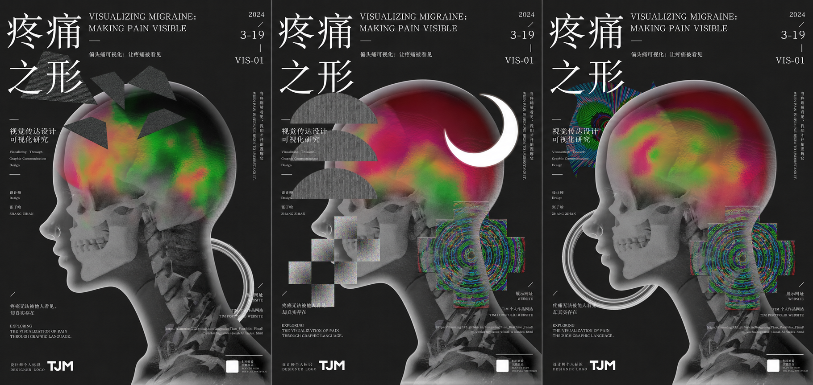

视觉设计 · 实验设计 / 2022–2023
痛觉可视化
VISUALIZING MIGRAINE
将不可见的痛觉转化为可以被阅读、被理解的视觉语言。

01 / PROJECT OVERVIEW
当疼痛能够被看见，人们是否能够更直观地理解另一种身体经验？
偏头痛是一种难以被他人直接感知的身体体验。项目从疼痛、视觉障碍与情绪变化等主观感受出发，将其转译为图形、色彩与纹理，并进一步应用于人体视觉、信息设计、透明媒介与实体展示。设计的重点不是解释疾病本身，而是探索一种表达方式：当疼痛能够被看见时，人们是否能够更直观地理解另一种身体经验。
- 年份 / YEAR
- 2022–2023
- 类型 / TYPE
- 视觉设计 · 实验设计
- 标签 / TAGS
- 信息可视化 · 图形设计 · 实验设计
- 工具 / TOOLS
- Cinema 4D / Photoshop / Illustrator
- 角色 / ROLE
- 独立设计
02 / PROJECT PREVIEW
项目成果预览
从视觉转译与交互、偏头痛视觉系列到实体与空间展示，先快速了解项目的三个核心结果。
03 / DETAILED INDEX
完整项目导航
按照研究、视觉系统、系列应用与实体延展逐层浏览；点击任意子项可直接到达对应内容与图片。
04 / DESIGN QUESTION
设计命题
偏头痛的体验并不固定。材料中的体验描述包含视野缺失、闪光或几何图案、搏动性疼痛、恶心、畏光、注意力下降以及发作后的疲惫等变化；发作过程也可能经历前驱期、先兆期、头痛期与恢复阶段。因此，项目没有用单一图像定义偏头痛，而是将复杂体验拆解为可被重新组合的视觉维度。
核心转译维度
05 / VISUAL TRANSLATION
痛觉的视觉转译
视觉系统｜从感受描述到视觉符号
首先对偏头痛相关的身体反应、疼痛感、视觉障碍与情绪反应进行收集和分类，再将语言描述抽象为视觉符号。尖锐、爆发、挤压、波动、扩散等不同形态对应不同的痛觉感受；颗粒、噪点与不稳定边缘用于表现思绪散乱、焦点模糊和感官受到干扰的状态。
色彩用于补充疼痛中的温度感与情绪变化。高饱和色彩、热感式渐变和噪点纹理被叠加到图形系统中，使疼痛呈现出聚集、扩散、震动和增强的视觉状态。由此形成一套能够继续被组合和应用的痛觉视觉语言。
视觉语言与设计说明
投影、透明媒介与交互体验
06 / MIGRAINE VISUAL SERIES
偏头痛视觉系列
视觉探索｜将视觉语言重新放回身体
在建立痛觉符号后，项目进一步将图形、色彩与纹理置入人体和头部结构中。通过位置、尺度、遮挡、透明度和叠加关系的变化，表现疼痛在身体内部出现、聚集、扩散以及干扰感知的状态。
黑色背景、透视人体、高饱和热感色彩与几何痛觉符号构成统一的视觉方向。同一套视觉语言通过不同组合形成连续系列，使每张图像既保持独立的疼痛状态，又能够共同呈现偏头痛体验的差异性和主观性。
疼痛之形｜三张海报主视觉
全身人体视觉系列
头部痛觉视觉系列
07 / FROM SCREEN TO SPACE
从屏幕到空间
实体延展｜让主观疼痛进入真实尺度
视觉系统进一步延展至大幅输出、卡片、透明媒介、数字屏幕与展览空间。原本存在于屏幕中的图形不再只是二维图像，而是通过尺寸、材质和空间关系进入真实环境，使观者能够从不同距离观察疼痛的视觉层次。
其中，透明媒介的叠加对应痛觉的组合逻辑：代表痛觉类型、强度和情绪状态的不同视觉层可以相互覆盖，形成不同的视觉结果。项目材料还提出以立体头部模型结合痛觉图形、热感影像与投影，将身体内部难以直接观察的感觉外化到可见表面。
空间与透明媒介主视觉
墙面大幅人体视觉输出
平板、屏幕与数字展示内容
卡片、透明媒介与印刷物细节
透明媒介的叠加对应痛觉类型、强度与情绪状态的组合逻辑。不同图层可以被抽取、覆盖和重新排列，使同一套视觉系统生成多种主观疼痛结果。
最终展览全景
08 / CONCLUSION
项目总结
这个项目尝试建立的并不是一种“标准的疼痛图像”，而是一套能够描述不同主观体验的视觉语言。从体验研究、信息分类和视觉抽象，到系列化图形与实体展示，设计将难以言说的身体感受转化为可被观看、组合和理解的形式。
核心设计路径
- 01研究与分类
- 02视觉转译
- 03系统建立
- 04系列应用
- 05实体延展